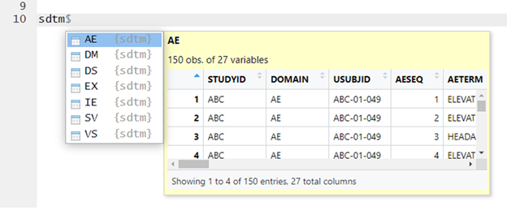
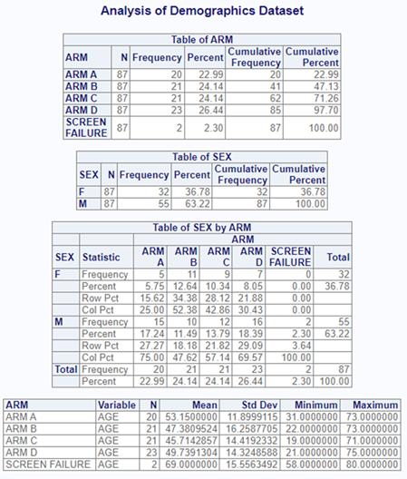
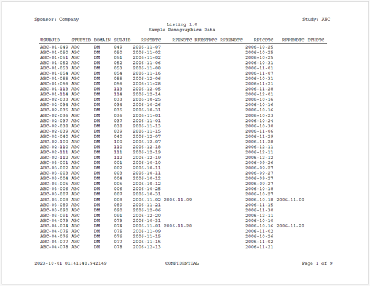

The sassy system is a coherent and well-designed ecosystem for managing and reporting on data in R. The system was developed in the context of creating statistical reports in the pharmaceutical industry. However, the functions are generalized such that they can be used in any vertical. The goal of the system is to make R capable of producing any kind of output that can be produced in SAS®.
The sassy system includes eight R packages. While the packages can be installed and used individually, they were designed to complement each other. The following sections provide a brief overview of the system.
Note that the sassy system of packages was written independently, and the authors have no association with, approval of, or endorsement by SAS Institute® or Posit®.
The sassy package itself is a meta-package that contains the following packages. Each of these packages contribute a needed area of functionality missing from R:
Each of the packages is self-contained, and can be used in isolation. However, when used together, the packages work together to create an integrated and productive user experience.
Let’s first get a basic understanding of how to use each package individually.
Programmers coming from SAS are usually surprised to find there is no automatic logging in R. The logr package was written to provide a simple logging system that anyone can use.
There are three steps to creating a log:
Below is a minimal example that illustrates how to create a log with
the logr package. The put() function
writes any R object to the log, similar to a SAS %put statement:
library(sassy)
# Open the log
log_open("Example1.log")
# Write to the log
put("Here is something to send to the log.")
# Close the log
log_close()The generated log looks like this:
=========================================================================
Log Path: ./log/Example1.log
Working Directory: C:/Projects/Archytas/WUSS/Code
User Name: dbosa
R Version: 4.3.1 (2023-06-16 ucrt)
Machine: SOCRATES x86-64
Operating System: Windows 10 x64 build 22621
Base Packages: stats graphics grDevices utils datasets methods base Other
Packages: procs_1.0.3 reporter_1.4.2 libr_1.2.8 logr_1.3.4 fmtr_1.6.0
common_1.0.9 sassy_1.2.1
Log Start Time: 2023-10-01 00:20:10.31621
=========================================================================
Here is something to send to the log.
NOTE: Log Print Time: 2023-10-01 00:20:10.491874
NOTE: Elapsed Time: 0.174062013626099 secs
=========================================================================
Log End Time: 2023-10-01 00:20:11.291764
Log Elapsed Time: 0 00:00:00
=========================================================================For a complete explanation of the capabilities of the logr package, see the logr documentation site.
The sassy system provides a libname()
function that is quite similar to a SAS® libname statement. The function
will import a set of related datasets from a specified directory, and
assign a name to the entire set. The following code imports a set of
related csv files and assigns them to the name “sdtm”:
Once the datasets have been imported, the libname can be accessed using R list syntax. That means the datasets are now available from the libname using the dollar sign ($). In RStudio®, it looks like this:

The libr package not only allows you to easily
access a directory of datasets. It also allows you to add, remove, and
edit datasets in the library. The libname() function can
import SAS datasets, CSV files, R data files, Excel files, and more. See
the libr documentation for
additional information.
The idea of a format is another foundational concept in SAS software. In R, formatting is spread over many functions. The fmtr package aims to consolidate and simplify formatting in R, and make it more similar to the way you work with formats in SAS. The package contains functions to create a user-defined format, apply formats to vectors and data frames, and create format catalogs.
The following example shows you how to create a user-defined format,
and apply it to a column of data. Notice that the value()
function is similar to the statements inside a SAS PROC FORMAT
procedure, and that the fapply() function is defined in a
way that is reminiscent of a SAS data step put()
function:
library(sassy)
#Create libname
libname(sdtm, "./data", "csv")
# Copy DM dataset
dat <- sdtm$DM
# Create user-defined format
fmt_sex <- value(condition(is.na(x), "Missing"),
condition(x == "M", "Male"),
condition(x == "F", "Female"),
condition(TRUE, "Other"))
# Create a new column of formatted values
dat$SEXF <- fapply(dat$SEX, fmt_sex)
# View a few rows of data
print(dat[1:5, c("USUBJID", "SEX", "SEXF")])
# # A tibble: 5 x 3
# USUBJID SEX SEXF
# <chr> <chr> <chr>
# 1 ABC-01-049 M Male
# 2 ABC-01-050 M Male
# 3 ABC-01-051 M Male
# 4 ABC-01-052 F Female
# 5 ABC-01-053 F FemaleThe value() and fapply() functions are a
small part of the very capable fmtr package. See the fmtr documentation for a complete
list of functions.
In SAS, the data step is the go-to procedure for manipulating data. The data step provides row-by-row processing of a dataset. In R, however, data processing is typically done column-by-column. This change in orientation is difficult for SAS programmers to adjust to. Also, there are some types of processing that are easy to do in a data step, but are quite difficult to do with column-wise processing.
For these reasons, the sassy system offers a
datastep() function. It is part of the
libr package. The datastep() function
simulates the most basic functionality of a SAS data step. Like a SAS
data step, it allows you to reference data.frame variables unquoted, and
to make up variables on the fly. It also provides basic data shaping
parameters like keep, drop, rename, and retain. The example below
demonstrates a simple data step that performs age categorization on the
sdtm.DM dataset.
library(sassy)
#Create libname
libname(sdtm, "./data", "csv")
# Perform data step
dm_mod <- datastep(sdtm$DM, keep = c("USUBJID", "AGE", "AGECAT"), {
if (AGE >= 18 & AGE <= 24)
AGECAT <- "18 to 24"
else if (AGE >= 25 & AGE <= 44)
AGECAT <- "25 to 44"
else if (AGE >= 45 & AGE <= 64)
AGECAT <- "45 to 64"
else if (AGE >= 65)
AGECAT <- ">= 65"
})
# Print dm_mod to console
print(dm_mod)
# # A tibble: 87 x 3
# USUBJID AGE AGECAT
# <chr> <dbl> <chr>
# 1 ABC-01-049 39 25 to 44
# 2 ABC-01-050 47 45 to 64
# 3 ABC-01-051 34 25 to 44
# 4 ABC-01-052 45 45 to 64
# 5 ABC-01-053 26 25 to 44
# 6 ABC-01-054 44 25 to 44
# 7 ABC-01-055 47 45 to 64
# 8 ABC-01-056 31 25 to 44
# 9 ABC-01-113 74 >= 65
# 10 ABC-01-114 72 >= 65
# # ... with 77 more rowsThe datastep() function, like the libname()
function, is one of several powerful functions in the
libr package. See the libr documentation for additional
examples and extended discussion.
One of the most frustrating things about working with R is that the statistics don’t always match SAS. It is not that the R statistics are wrong. It is that R functions often have different default settings or different algorithms, which lead to different results. Both tools are correct. But they are correct in different ways.
The procs package was developed to give you an easy
way to produce statistics in R that match SAS. The statistical functions
in the package include proc_freq(),
proc_means(), proc_ttest(), and
proc_reg(). For convenience, the package also includes
proc_sort(), proc_transpose(), and
proc_print(). Collectively, these functions represent the
core of the sassy system.
Let us look at an example. In this example, we will generate frequencies and means on some variables in the DM dataset, combine them into a single list, and print everything to the viewer:
library(sassy)
# Define data library
libname(sdtm, "./data", "csv")
# Generate Frequencies
res <- proc_freq(sdtm$DM,
tables = c("ARM", "SEX", "SEX * ARM"),
output = "report")
# Generate Means and append to Frequencies
res[["AGE"]] <- proc_means(dat, var = "AGE",
class = "ARM",
output = "report")
# Print everything to viewer
proc_print(res, titles = "Analysis of Demographics Dataset")When working in RStudio, the above code will send the following to the viewer:

Note that you may also print the report to a file. Use the “file_path” and “output_type” parameters to specify where to print the report and what type of report to create. See the procs package documentation for additional information.
If you want to create an HTML report in R, there are many packages to choose from. For paged file formats such as text, RTF, DOCX, and PDF, however, options are much more limited. The reporter package provides easy page-based reporting with a choice of output types. It is currently the closest R package to matching the capabilities of SAS PROC REPORT and ODS. There are four steps to creating a reporter report:
Below is an example of a simple data listing using the
libr and reporter packages. Observe
that the reporter package will automatically set column
widths, wrap pages, and put page breaks at the appropriate locations. If
you want to override the automatic settings, you can use the
define() function. Also note the ability to set an ID
variable that is repeated on every page:
library(sassy)
# Define data library
libname(sdtm, "./data", "csv")
# Create report content
tbl <- create_table(sdtm$DM) |>
define(RACE, width = 2.5) |>
define(ETHNIC, width = 2.5) |>
define(USUBJID, id_var = TRUE)
# Create report and add content
rpt <- create_report("./output/example.pdf", font = "Courier",
output_type = "PDF") |>
page_header("Sponsor: Company", "Study: ABC") |>
titles("Listing 1.0", "Sample Demographics Data") |>
add_content(tbl) |>
page_footer(Sys.time(), "CONFIDENTIAL", "Page [pg] of [tpg]")
# Write out the report
write_report(rpt)Here is the first page of the report created by the above example code:

See the reporter documentation site for more examples and complete function documentation.
The above packages comprise the main body of the sassy system. In addition, there is a package of utility functions called common. The functions in this package perform useful tasks that are not easily done using Base R. Here is a list of functions in the package and a short explanation of each:
v(): A generalized NSE quoting function.sort.data.frame(): An overload to the sort function for
data frames.labels.data.frame(): An overload to the labels function
for data frames.%p%: An infix operator for the paste0() function.%eq%: An enhanced equality operator.Sys.path(): A function to return the path of the
currently running program.roundup(): A rounding function that matches SAS®
rounding.file.find(): A function to search for a file on the
file system.dir.find(): A function to search for a directory on the
file system.find.names(): A function to search for variable names
on a data.frame.copy.attributes(): A function to copy column attributes
from one data frame to another.supsc(): A function to get UTF-8 superscript
characters.subsc(): A function to get UTF-8 subscript
characters.symbol(): A function to lookup UTF-8 symbols.spaces(): A function to create a string of blank
spaces.changed(): A function to identify changed values in a
vector or data frame.For more information, see the common package documentation.
The sassy system also contains a macro language. It is contained in a package called macro, and mimics the basic functionality of the SAS macro language. The macro commands are contained inside R code comments, but otherwise resemble SAS macro functions. Here is a simple example:
library(sassy)
#%let x <- 1
#%if (&x == 1)
print("x is one!")
#%else
print("x is something else!")
#%endAs shown above, the R macro language supports macro variable assignments and macro conditions. It also supports do loops, include, user-defined macro functions, and several built-in macro functions. See the macro documentation for a complete explanation of this interesting package.
The sassy system is validated. For the procs package, all functions have been compared to SAS. The validation documentation is here
In addition, there are IQ and OQ validation routines built into the
sassy package itself. These routines can be used for
on-site qualification of the packages in your local environment. See the
run_iq() and run_oq() documentation in the
sassy package.
To explore the sassy system further, please see the following vignettes: